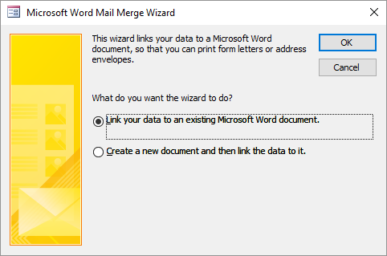
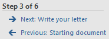
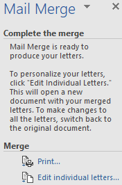
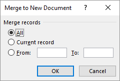

Task: Mailmerge
From Access, the Word mail Merge Wizard is started to create a standard letter in Word with adresses in Access.
In this task you will send customers a standard letter containing the announcement of a new voucher box with the name “Snow White”. The source for the addresses will be table Customers.
Tip: It is also possible to use a query as data source.
- Open database candy2016.accdb.
- Select table Customers.
-
Right click on the table name and choose Export > Word Merge.
Figure: Microsoft Word Mail Merge Wizard  - Select Link your data to an existing Microsoft Word document and click OK.
-
Select practice file snow-white.docx in the dialog box and
click Open.
Microsoft Word is started with the practice file in it. On the ribbon tab Mailings is selected and at the right side the panel Mail Merge is displayed. On the bottom of this panel you can see that the wizard is in step 3 of 6.
Figure: Progress wizard mail merge: step 3 of 6

- Click on the link Next: Write your letter.
- Put the cursor in the first line and choose tab Mailings > Insert Merge Field (group Write & Insert Fields) > FirstName.
-
After that, add the fields LastName, Address, ZipCode and City accoring to the
following model.
<<FirstName>> <<LastName>> <<Address>> <<ZipCode>> <<City>> -
Click in panel Mail Merge below Step 4 of
6 on the link Next: Preview your
letters.
An example letter for the first customer is shown.
-
Click in panel Mail Merge below Step 5 of
6 on the link Next: Complete the
merge.
You can now complete the merge in panel Mail Merge:
Figure: Finishing mail merge You now have two choices:- With Print you can send the letters to the printer.
- With Edit individual letters, one document is created with the letters.
-
Click on the link Edit individual letters....
Figure: Selection of records  -
Specify that you want create letters for the first 10 customers. Then click
OK.
A new Word document will be created containing 10 letters.
- Save the document with name Invitation new box and close Word.